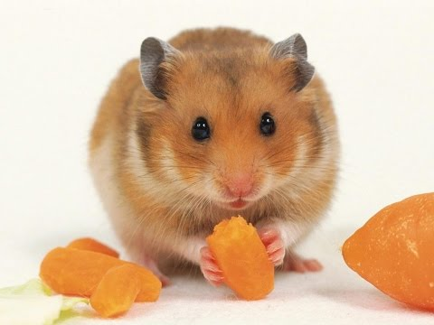
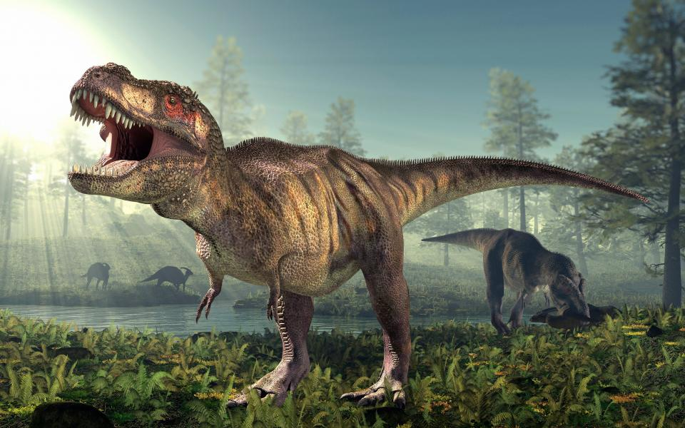
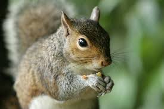
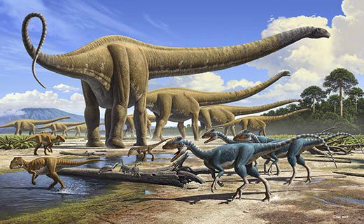
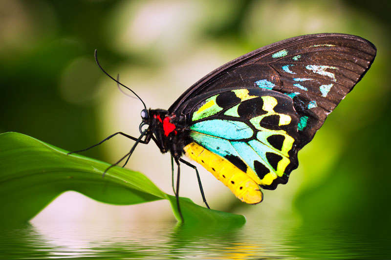

The giant panda, also known as panda bear or simply panda, is a bear native to south central China. It is easily recognized by the large, distinctive black patches around its eyes, over the ears, and across its round body.The domestic cat is a small, typically furry, carnivorous mammal. They are often called house cats when kept as indoor pets or simply cats when there is no need to distinguish them from other felids and felines.

Hamsters are rodents (order Rodentia) belonging to the subfamily Cricetinae. In the wild, hamsters are more crepuscular than nocturnal and remain underground during the day to avoid being caught by predators. They feed primarily on seeds, fruits, and vegetation, and will occasionally eat burrowing insects. They have elongated cheek pouches extending to their shoulders, using them to carry food back to their burrows.

Tyrannosaurus rex (rex meaning "king" in Latin) is one of the most well-represented of the large theropods. Tyrannosaurus lived throughout what is now western North America, on what was then an island continent known as Laramidia. Tyrannosaurus had a much wider range than other tyrannosaurids. Fossils are found in a variety of rock formations dating to the Maastrichtian age of the upper Cretaceous Period, 68 to 66 million years ago. It was the last known member of the tyrannosaurids, and among the last non-avian dinosaurs to exist before the Cretaceous–Paleogene extinction.

The squirrel family includes tree squirrels, ground squirrels, chipmunks, marmots, flying squirrels, and prairie dogs amongst other rodents.A dragon is a legendary creature, typically scaled or fire-spewing and with serpentine, reptilian or avian traits, that features in the myths of many cultures around world.

Dinosaurs are a diverse group of reptiles of the clade Dinosauria. They first appeared during the Triassic period, between 243 and 231 million years ago, although the exact origin and timing of the evolution of dinosaurs is the subject of active research They became the dominant terrestrial vertebrates after the Triassic–Jurassic extinction event 201 million years ago; their dominance continued through the Jurassic and Cretaceous periods. The fossil record indicates that birds are modern feathered dinosaurs, having evolved from earlier theropods during the late Jurassic Period.

Butterflies have the typical four-stage insect life cycle. Winged adults lay eggs on the food plant on which their larvae, known as caterpillars, will feed. The caterpillars grow, sometimes very rapidly, and when fully developed, pupate in a chrysalis. When metamorphosis is complete, the pupal skin splits, the adult insect climbs out, and after its wings have expanded and dried, it flies off.